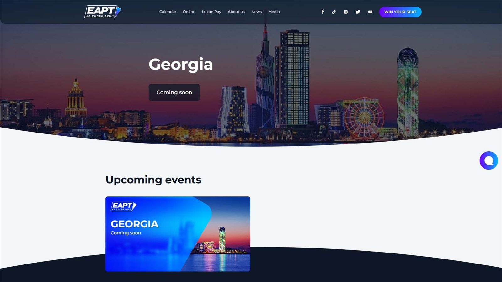
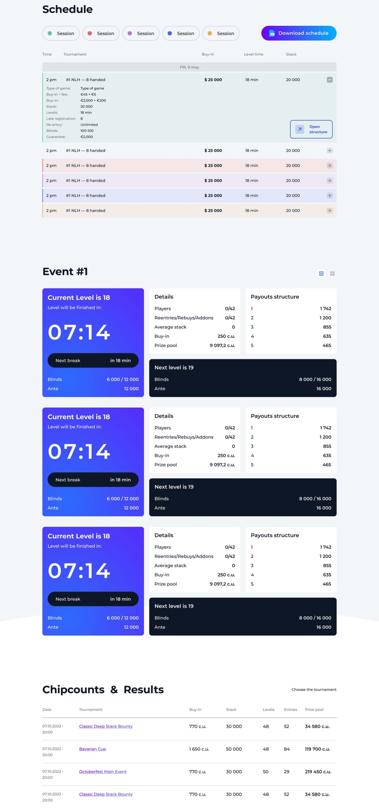
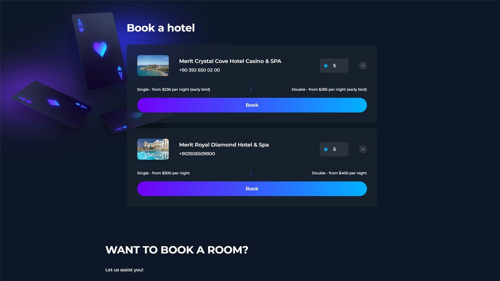
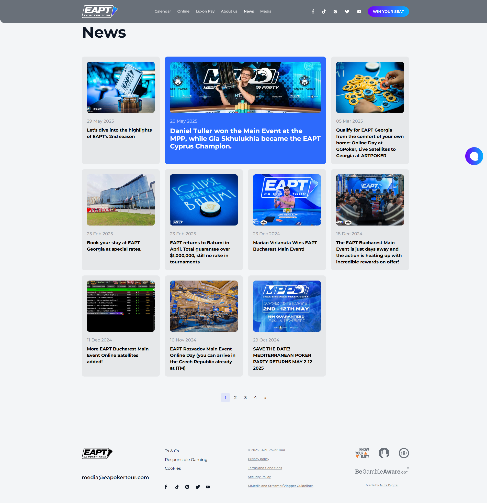
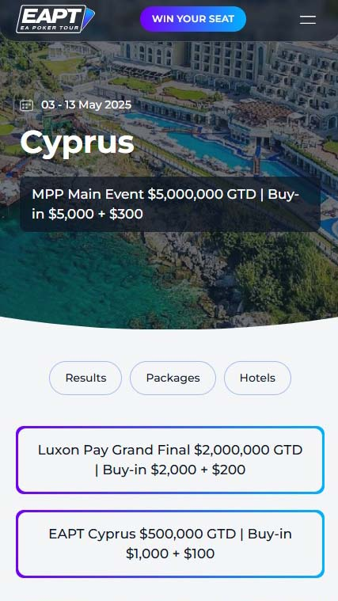
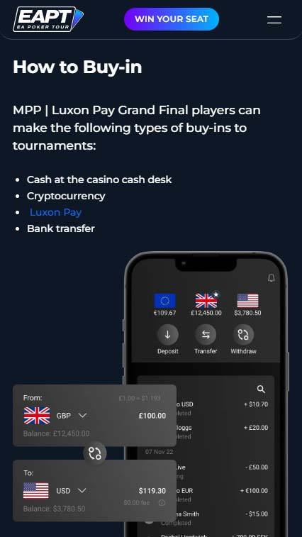
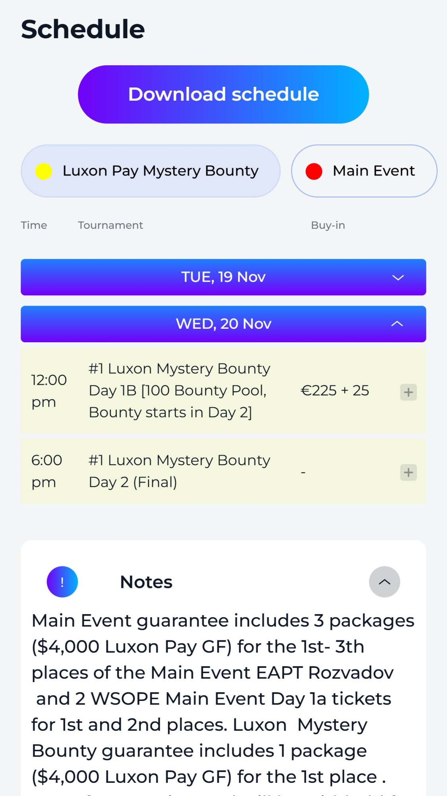
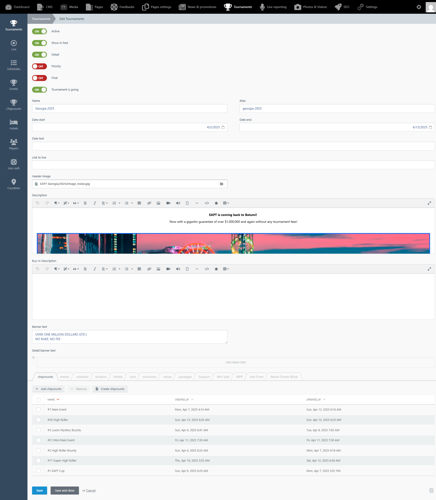
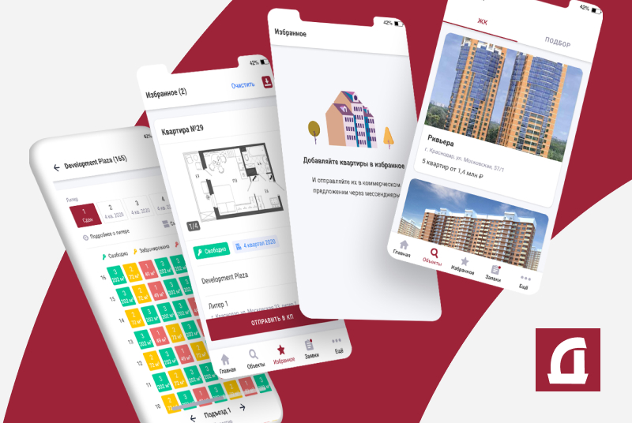

01
О проекте

Разработать сайт для EA Poker Tour с возможностью отображения турнирных серий, онлайн-трансляции игровых данных через интеграцию с kHold'em API и гибкой админ-панелью для управления контентом.

EA Poker Tour — серия международных покерных турниров, которые проходят в крупных казино по всему евразийскому региону: на Кипре, в Мадриде, Братиславе, Грузии, Барселоне, Милане. Каждая серия длится по нескольку недель, собирает сотни участников, десятки событий и тысячи деталей: расписания, бай-ины, стек-лидеры, блайнды, отели, регистрационные формы.
Мы в агентстве любим покер, периодически даже устраиваем мини-турниры с коллегами, и, конечно, следим за телеграм-каналом сооснователя агентства и талантливого покериста Константина Квашина @kvashin_k. Благодаря этому мы быстро нашли общий язык с EA Poker Tour, когда они обратились к нам с задачей разработать сайт.
Структурировать информацию о всех сериях (прошедших и будущих);
Транслировать информацию по текущим турнирам, которая будет обновляться в режиме реального времени: количество количество игроков, блайнды, чипкаунт и т.д.;
Организовать регистрацию на серию и функционал подбора гостиниц для приезжающих игроков;
Адаптировать визуал под бренд EA Poker Tour и сделать интерфейс максимально удобным.
Перед проектированием мы изучили сайты крупнейших серий: EPT, WPT, Triton Poker, Kings Resort, PokerGO, Hendon Mob.
Многие из них визуально перегружены, имеют неудобные для пользователя многоуровневые меню и устаревший дизайн. Мы предложили другое решение — логичную, «плоскую» структуру и чёткие интерфейсы.
Информации по каждой серии много, вся она специфическая. Прототипирование шло с участием команды из разработчиков-покеристов и веб-дизайнера. Мы продумывали, как должна выглядеть карточка серии, какие блоки обязательны, какие блоки и в каком порядке выводить пользователю. В результате прототип с первого раза получил согласование.
На этапе дизайна вдохновлялись актуальными трендами на Behance и хорошим UI в играх: на момент разработки проекта в моде были темные фоны и яркие акценты.
Для UX-тестов мы собрали кликабельный макет и попросили покеристов пройти полный путь: выбрать турнир, посмотреть расписание, зарегистрироваться, найти результаты прошедших серий. 5 из 5 тестировавших справились с первого раза.



Отдельно прорабатывали мобильную версию. Большинство участников следит за сериями и регистрируется со смартфона — это основной сценарий использования.



Сайт построен на Winter CMS. В админке лежит полноценная система управления турнирами: десятки вкладок, каждая серия — отдельная сущность с десятками параметров и вкладок.

Чтобы выводить на сайт информацию по действующей серии в реальном времени, мы интегрировались с системой kHold’em. Это профессиональное ПО для покерных серий, которое используется крупными площадками по всему миру.
Интеграция была не самой простой, плюс накладывались сложности в виде периодической геоблокировки. Тем не менее, всё реализовано: теперь на сайте можно смотреть трансляцию активной серии в реальном времени.
Параллельно с разработкой сайта мы заложили архитектуру под будущее мобильное приложение через RESTful API.
Это наш второй англоязычный проект (после сайта для экскурсий по Португалии Happy Sardine) — и полезный опыт. Мы собрали фулл-хаус из дизайна, технологий, структуры, пользовательского опыта и понимания игры, чтобы разработать функциональный сайт для профессионалов и любителей покера.
Если этот кейс вызвал интерес и вы тоже хотите удобный и живой сайт, будем рады встрече. Приходите, обсудим ваши идеи и вместе сделаем что-то классное.
